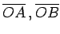
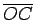

Inhalt Index DeskTop Bronstein

 Geometrie Sphärische Trigonometrie Grundbegriffe der Geometrie auf der Kugel
Geometrie Sphärische Trigonometrie Grundbegriffe der Geometrie auf der Kugel


Es seien A, B und C drei Punkte auf einer Kugelfläche, die nicht auf einem Großkreis liegen. Werden jeweils zwei dieser Punkte durch einen Großkreis verbunden, so entsteht das sphärische Dreieck ABC.

Als Seiten des sphärischen Dreiecks werden die sphärischen Abstände der Dreieckspunkte definiert, d.h., sie stellen die im Kugelmittelpunkt gemessenen Winkel zwischen je zwei Radien  und  dar. Sie werden mit a, b und c bezeichnet und im folgenden im Winkelmaß angegeben, unabhängig davon, ob sie in der Zeichnung als Winkel im Kugelmittelpunkt oder als Großkreisbogen auf der Kugelfläche eingetragen sind. Die Winkel des sphärischen Dreiecks sind die Winkel zwischen je zwei der drei Großkreisebenen. Sie werden mit  und
und  bezeichnet.
bezeichnet.
Die Reihenfolge der Bezeichnung der Punkte, Seiten und Winkel des sphärischen Dreiecks erfolgt in Analogie zum ebenen Dreieck. Ein sphärisches Dreieck, bei dem mindestens eine Seite  beträgt, heißt rechtsseitiges Dreieck. Es stellt eine Analogie zum rechtwinkligen Dreieck der Planimetrie dar.
beträgt, heißt rechtsseitiges Dreieck. Es stellt eine Analogie zum rechtwinkligen Dreieck der Planimetrie dar.